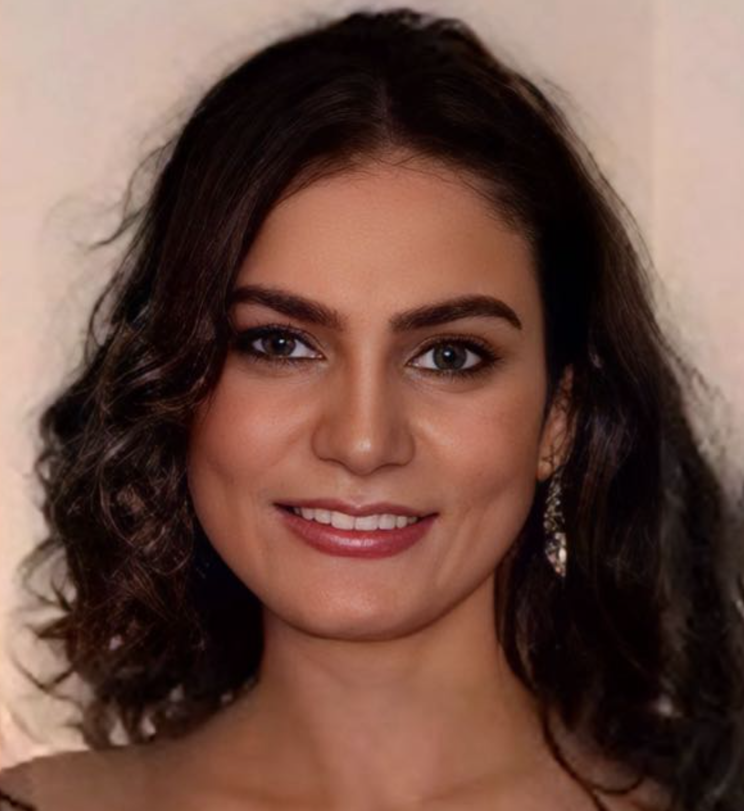
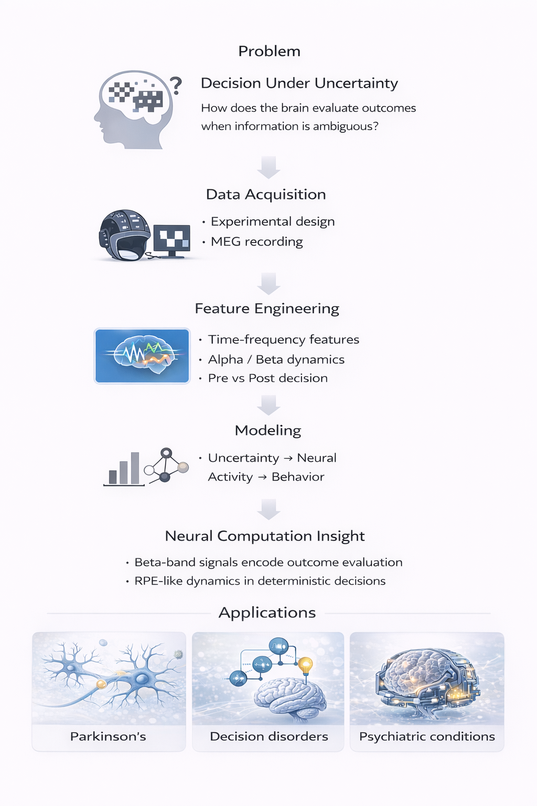
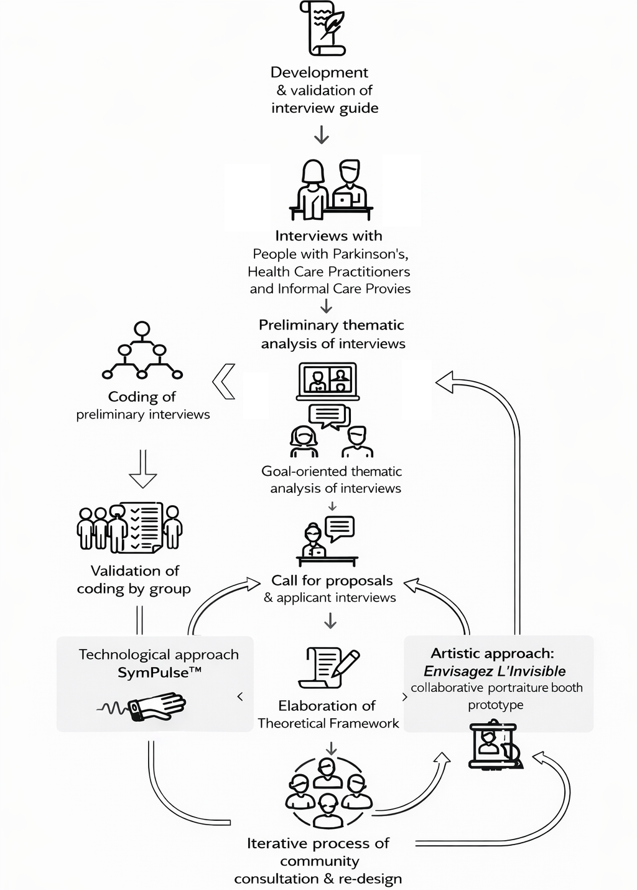
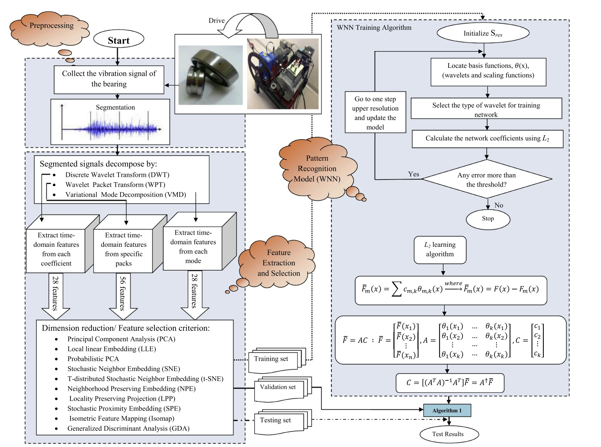
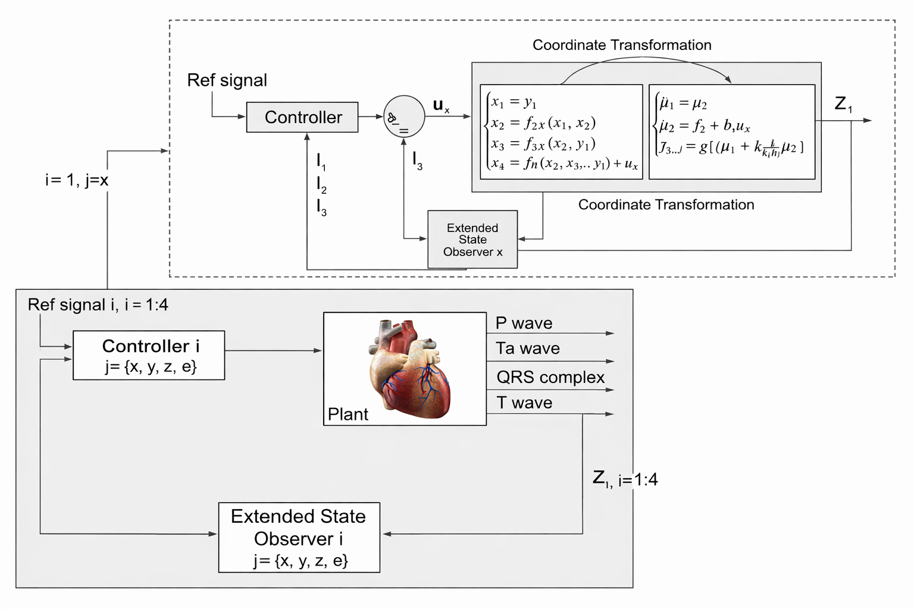
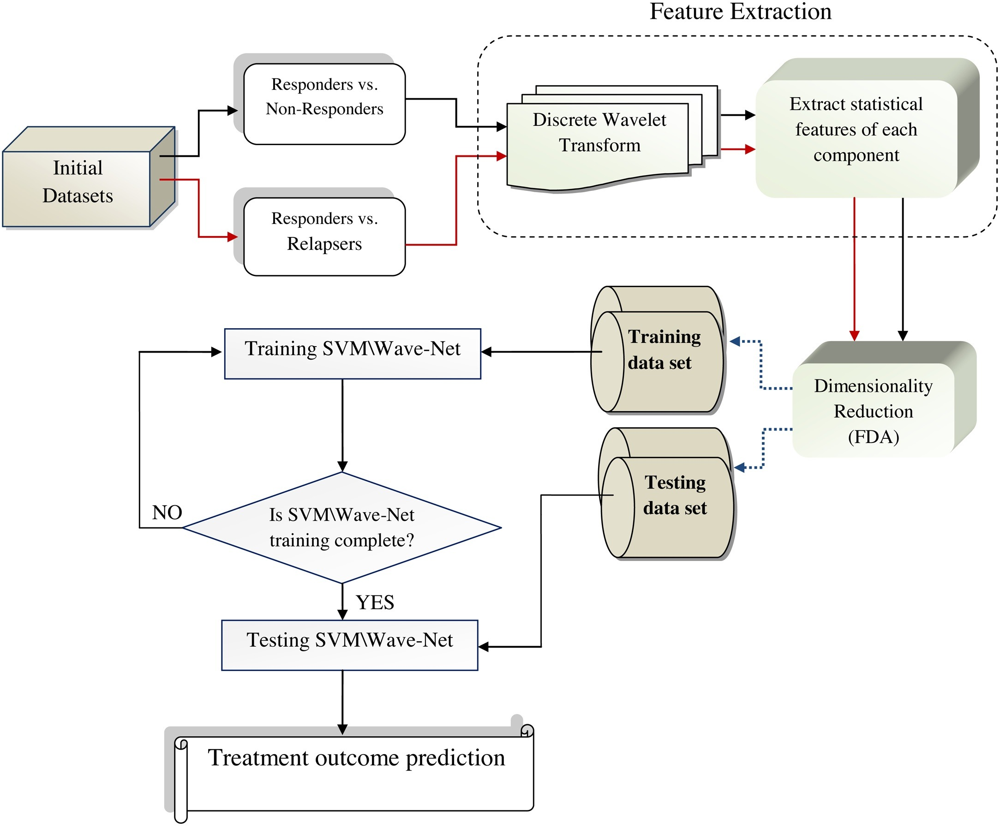
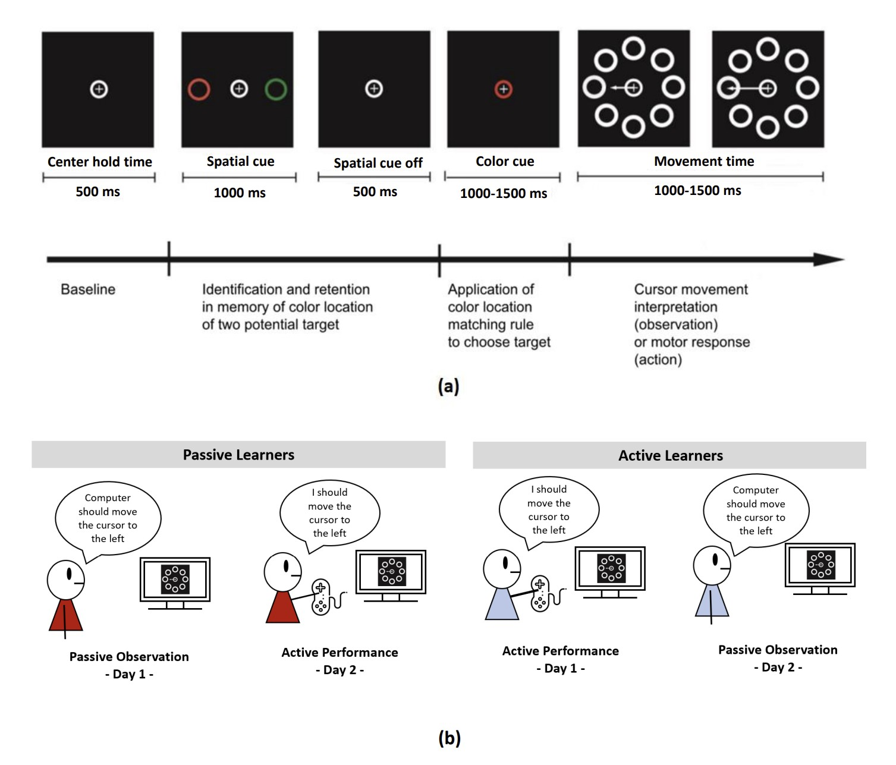

Health AI Engineer | Machine Learning for Human Data
I build machine learning systems that transform complex, noisy human data into interpretable and real-world decisions.

To build systems that transform complex human data into real-world impact, enabling individuals and organizations to operate at their highest potential.
To design intelligent systems and businesses that turn complexity into clarity and insights into action.
To bridge research, technology, and real-world application by building solutions that are scalable, interpretable, and impactful.
To create value across multiple dimensions: human impact, business growth, and long-term innovation.
I am an applied AI scientist working at the intersection of machine learning, neuroscience, and signal processing. My work focuses on building computational pipelines for high-dimensional, noisy, and multimodal human data.
I am especially interested in systems that combine scientific rigor with practical value in healthcare, human-centered AI, and real-world decision systems.
LLM-Based Psychotherapy Simulation
Worked on LLM pipelines to generate realistic patient–therapist conversations across multiple configurations, including high-guardrail models (e.g., GPT-4.1, Claude) and more permissive models (e.g., Grok, Nous Hermes).
Implemented automated WAI-SR (Working Alliance Inventory) evaluation using an LLM-as-a-judge framework, enabling systematic comparison between simulated and real therapeutic interactions.
Analyzed how client provocation and therapist response strategies influence core dimensions of therapeutic alliance (bond, goal, task), translating abstract interaction dynamics into measurable signals.
Designed and conducted neuroscience experiments using MEG to study decision-making, outcome evaluation, and reward prediction mechanisms.
Built end-to-end pipelines spanning experimental design, data acquisition, preprocessing, feature extraction, modeling, and statistical validation.
Identified neural signatures of uncertainty and feedback-driven evaluation, including reward prediction error-like dynamics in human sensorimotor decision-making.
Applied clinical and ethical research frameworks to ensure rigor, reproducibility, and participant-centered practices in human data studies.
Developed strong foundations in research integrity, including reproducibility, data management, authorship ethics, and responsible decision-making in scientific work.
Gained practical understanding of clinical research standards, including protocol adherence, participant safety, informed consent, and regulatory compliance in human-subject studies.
Learned to integrate sex and gender as critical variables in data analysis, improving validity, inclusivity, and clinical relevance of research outcomes.
Applied machine learning in real-world environments, working with noisy, high-dimensional human data and building end-to-end pipelines that translate raw signals into meaningful insights.
Developed machine learning approaches for analyzing multimodal sensor data in real-world indoor environments. Focused on extracting meaningful behavioral signals from noisy and incomplete data using unsupervised learning techniques.
Built data processing pipelines that transform raw sensor streams into structured representations for downstream modeling, with an emphasis on robustness and scalability.
Learned to work with real-world data constraints, handle uncertainty in sensor signals, and design feature extraction strategies that generalize beyond controlled settings.
Applied machine learning to longitudinal, time-resolved data to identify early indicators of cognitive decline. Designed feature extraction and modeling pipelines for high-dimensional behavioral signals.
Worked on interpretable models to bridge the gap between algorithmic predictions and clinically meaningful insights, supporting decision-making in healthcare contexts.
Learned to build end-to-end ML pipelines for real-world healthcare data, balance predictive performance with interpretability, and communicate results to non-technical stakeholders.
Applied entrepreneurial frameworks to translate scientific and technical ideas into real-world systems, products, and scalable impact.
Developed the ability to move from scientific ideas to validated opportunities by focusing on real user problems, stakeholder needs, and solution–market fit.
Learned to structure early-stage ideas into testable hypotheses and evaluate them through real-world feedback.
Applied lean startup principles to reduce uncertainty through rapid iteration, customer discovery, and continuous validation.
Learned to replace static planning with adaptive decision-making grounded in evidence and experimentation.
Strengthened systems thinking and strategic decision-making in uncertain environments.
Developed the ability to communicate complex ideas clearly, align stakeholders, and translate early-stage concepts into actionable execution plans.

Examined how the human premotor cortex encodes abstract rule-based associations during passive observation using magnetoencephalography (MEG). The results show that premotor activity reflects both correct and incorrect observed outcomes, even in the absence of overt motor actions, supporting a role for sensorimotor circuits in embodied decision-making and interpretation of non-biological events.

Explored alternative approaches to communicating lived experiences of Parkinson’s disease through interdisciplinary collaboration combining art, technology, and neuroscience. This work focuses on bridging the gap between internal patient experiences and external communication, highlighting the role of co-designed, non-verbal methods in healthcare and human-centered research.

Developed a neuro-wavelet framework for intelligent fault diagnosis in bearing systems. This work combines wavelet-based signal analysis with machine learning to improve defect detection accuracy in complex engineering signals, demonstrating how data-driven methods can support reliable condition monitoring and industrial diagnostics.

Proposed an extended state observer-based control framework to study and regulate cardiac rhythm dynamics using a heterogeneous coupled oscillator model. This work combines nonlinear dynamical systems, synthetic ECG modeling, and observer-based control to analyze cardiac electrical behavior and demonstrate suppression of sinus tachycardia.

Developed a predictive modeling framework to estimate treatment outcomes for Hepatitis C patients undergoing interferon and ribavirin therapy. This work applies machine learning to biomedical data to support clinical decision-making, enabling early identification of patients likely to respond to treatment.

Investigated how the human premotor cortex encodes abstract rule-based associations during passive observation using magnetoencephalography (MEG). The results show that premotor activity reflects both correct and incorrect observed outcomes, even in the absence of overt motor actions, supporting a role for sensorimotor circuits in embodied decision-making and interpretation of non-biological events.
Planned and coordinated interdisciplinary neuroscience and AI events across Québec, strengthening collaboration, networking, and knowledge exchange across institutions.
Built partnerships and helped raise support for EDI-focused neuroscience initiatives through sponsorship and community engagement.
Translated complex neuroscience and mental health research into accessible language for broader public understanding and trust.
Peer-reviewed manuscripts for journals including IEEE Journal of Biomedical and Health Informatics, ISA Transactions, and IEEE Access, contributing to rigor and quality in biomedical and engineering research.
Supported international graduate students through peer mentorship, orientation, and community-building during transition.
Delivered food and hygiene products to vulnerable communities during the COVID-19 pandemic, contributing to crisis response and community care.